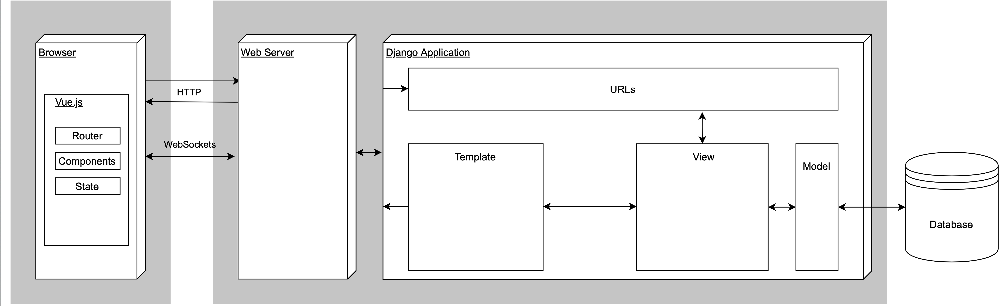

Basics
This page covers the overall basics of the project regarding the back end (Django) and the front end (Vue.js). The most important aspects to get started will be covered. More in-depth guides/knowledge for either of the parts is planned for a different page (tbd).
System overview
A brief overview over the system can be obtained from the following diagram:

Back end (Django)
Model-View-Template (MVT)
Django is following the Model-View-Template structure, where the Model is for structuring and manipulating the data of the application, the view implements
the business logic and the templates serves the views to the clients. In this project, the templates are rendering the static files
provided by the webpack bundling, that are moved into the static folder inside the back end directory after executing npm run build inside the vue_frontend directory.
The principle of Django's MVT architecture is visualized in the following diagram:
 Source: https://cdn.askpython.com/wp-content/uploads/2020/08/image-23.png.webp
Source: https://cdn.askpython.com/wp-content/uploads/2020/08/image-23.png.webp
Model
The model of the application is to be found in the respective models.py file. See https://docs.djangoproject.com/en/3.2/topics/db/models for documentation on how to create Models and available Fields.
All of the data of the model instances are saved to a PostgreSQL Database. Postgres integrates well with Django and Django even supports some fields exclusively for Postgres. See https://docs.djangoproject.com/en/3.2/ref/contrib/postgres/
View
The view implements the business logic of the application. In the patients/api/views.py, the REST API endpoints are defined. The most important endpoints that are exposed
as of the end of the thesis are:
| Endpoint | Actions (REST) | Description |
|---|---|---|
/api/patients/ |
GET, POST | List view of all patients |
/api/patients/id/ |
GET, PUT, PATCH, DELETE | Detail view of a single patient |
/api/reports/ |
GET, POST | List view of all reports |
/api/reports/id/ |
GET, PUT, PATCH, DELETE | Detail view of a single report |
/rest-auth/login/ |
POST | Login with username and password |
/rest-auth/logout/ |
POST | Logout and delete token |
/rest-auth/user/ |
GET | Retrieve user information |
A full documentation of all available endpoints as well as an interactive demo of the endpoints can be obtained from the
endpoint /swagger. Curl commands can be interactively executed on the page and requests and responses can be analysed.
The fields, that are to be included (or excluded) in the respective JSON responses are defined in the patients/api/serializers.py file.
With the WebSocket integration, the endpoints for WebSocket requests are defined like so:
| Stream | Consumer | Model | Actions (REST-like) |
|---|---|---|---|
patients |
PatientConsumer | Patient | List, Retrieve, Create, Patch, Update, Delete |
reports |
ReportConsumer | Report | List, Retrieve, Create, Patch, Update, Delete |
history |
HistoryConsumer | HistoricalReport | List, Retrieve, Patch, Update, Delete |
The endpoints are defined in the asgi.py file of the Project. For more information see Routing.
Template
Routing
The following code snippet from the asgi.py file shows
the ProtocolTypeRouter that routes the HTTP and WebSocket requests according to their protocol types:
application = ProtocolTypeRouter({
"http": get_asgi_application(),
"websocket": TokenAuthMiddlewareStack(
URLRouter(
[re_path(r"^ws/$", AsyncJsonWebsocketDemultiplexer(
patients=PatientConsumer().as_asgi(),
reports=ReportConsumer().as_asgi(),
history=HistoryConsumer().as_asgi(),
).as_asgi()), ]
)
),
})
The streams are defined inside the Demultiplexer and connected to their respective consumer (see Consumer).
REST API
The REST API endpoints are defined as described before (see View). An endpoint definition consists of several files:
patients/models.pypatients/api/serializers.pypatients/api/views.pypatients/api/urls.py
The files are to be created/updated in the order shown above. The model is the first thing, as it is the base to what will be
possible to expose via an API endpoint. The serializer defines which fields are to be included or excluded into the serialized JSON response and is based on the model.
The view is handling the serialized JSON and able to add orderings to the data or filters. Besides the textual JSON output of every response,
the Django REST Framework is also serving a browsable API with web pages, where one can create, update and delete model instances inside the browser.
To be able to request the endpoints via the given URLs, the created Views have to be registered and named in the patients/api/urls.py file.